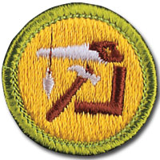

Woodwork - In-Person Class Notes
Please arrive with ample time prior to the start time of your class for registration. Remember, there will be others checking in as well that registration may take a little time, depending on the size of the class and the event held in conjunction with the class.
Your Scout uniform is required to be worn when attending this merit badge session. If you have any additional questions, please feel free to contact Brian Reiners (Scoutmater Bucky) via email at scoutmasterbucky@yahoo.com or on the phone at 612-483-0665.
Reviewing the merit badge pamphlet PRIOR to attending and doing preparation work will ensure that Scouts get the most out of these class opportunities. The merit badge pamphlet is a wealth of information that can make earning a merit badge a lot easier. It contains many of the answers and solutions needed or can at least provide direction as to where one can find the answers.
It is NOT acceptable to come unprepared to a Scoutmaster Bucky event. You can (and should) use the Scoutmaster Bucky Woodwork Merit Badge Workbook to help get a head start and organize your preparation work. Please note that the use of any workbook is merely for note taking and reference. Completion of any merit badge workbook does not warrant, guarantee, or confirm a Scout's completion of any merit badge requirements.
It should be noted that this merit badge class is not meant for those who just want to come and see what they can get done. It is possible to complete this merit badge by being properly prepared and having done the preparation work prior to the class. Preparation is a MUST! If you are not willing to participate to these expectations and standards, perhaps the Scoutmaster Bucky opportunity is not for you.
Things to remember to bring for this merit badge class:
- Merit badge blue card properly filled out and signed off by your Scoutmaster
- Woodwork Merit Badge Pamphlet
- Scout uniform
- Supporting documentation or project work pertinent to the Woodwork merit badge, which may also include a merit badge workbook for reference with notes
- Totin' Chip Card and/or proof of completion
- A positive Scouting focus and attitude
Please read and understand the Scoutmaster Bucky Blue Card Process.
Woodwork - Online Class Notes
Please arrive with ample time prior to the start time of your class to ensure your connection to the online session is working properly. Ask people in your household to refrain from unnecessary internet usage, including but not limited to: streaming videos, online gaming, and other heavy bandwidth usage.
You will receive a link 12 to 24 hours before the class start time. Notification will come through the email address provided during the registration process, so please make sure you enter your email correctly.
Your Scout Uniform is required to be worn when attending this Online Merit Badge session. If you have any additional questions, please feel free to contact Brian Reiners; Scoutmaster Bucky via email at scoutmasterbucky@yahoo.com or on the phone at 612-483-0665.
Reviewing the Merit Badge Pamphlet PRIOR to attending and doing preparation work will insure that Scouts get the most out of these online class opportunities. The Merit Badge Pamphlet is a wealth of information that can make earning a Merit Badge a lot easier. It contains many of the answers and solutions needed or can at least provide direction as to where one can find the answers.
It is NOT acceptable to come unprepared to a Scoutmaster Bucky event. You can (and should) use the Scoutmaster Bucky American Business Merit Badge Workbook to help get a head start and organize your preparation work. Please note that the use of any workbook is merely for note taking and reference. Completion of any Merit Badge Workbook does not warrant, guarantee, or confirm a Scouts completion of any merit badge requirement(s). You can download the Scoutmaster Bucky Woodwork Merit Badge Workbook for taking notes to help you prepare.
It should be noted that this Merit Badge class is not meant for those who just want to come and see what they can get done. It is possible to complete this Merit Badge by being properly prepared and having done the preparation work prior to the class. Preparation is a MUST! If you are not willing to participate to these expectations and standards, perhaps the Scoutmaster Bucky opportunity is not for you.
Woodwork
Merit Badge
2020 Scouts BSA Requirements

Please make sure you read the top portion of this page for general participation expectations in a Scoutmaster Bucky merit badge class.
Pay careful attention to the action verbs within the requirements. An example to note:
"Tell", "explain", "describe", and "discuss" are commonly used and will require the Scout to perform these actions during the class. When these action verbs are a part of any requirement, Scouts are expected to be prepared to share. Reading responses is not acceptable since it does not fulfill the requirement of showing the Scout's knowledge and understanding.
IT MUST BE NOTED THAT DUE TO THE SAFETY LEVEL REQUIRED FOR THIS MERIT BADGE CLASS, SCOUTS NOT FOLLOWING DIRECTION OR FAILING TO ADHERE TO CLASS INSTRUCTIONS MAY BE REMOVED FROM THE CLASS AND FORFEIT PARTICIPATION FEES AND THE PRIVILEGE OF CONTINUING TO PARTICIPATE. PARENT OR GUARDIAN WILL BE ASKED TO COME AND REMOVE SCOUT FROM THE EVENT.
1.
Do the following:
(a)
Explain to your counselor the most likely hazards you may encounter while participating in woodwork activities, and what you should do to anticipate, help prevent, mitigate, and respond to these hazards. Explain what precautions you should take to safely use your tools.
(b)
Show that you know first aid for injuries that could occur while woodworking, including splinters, scratches, cuts, severe bleeding, and shock. Tell what precautions must be taken to help prevent loss of eyesight or hearing, and explain why and when it is necessary to use a dust mask.
Scouts will need to be prepared to "show" their first aid knowledge and skill for woodworking related injuries during the class.
(c)
Earn the Totin’ Chip recognition.
Scouts must complete ahead of time their Totin' Chip requirements and bring their current and up-to-date Totin' Chip Card with them to class. It is not acceptable to just say you have your Totin' Chip, you must bring proof. For those that are not able to complete this ahead of time, Scouts will have an opportunity to complete this as a part of the class however this may affect their ability to complete other requirements in the class. Be Prepared.
2.
Do the following:
(a)
Describe how timber is grown, harvested, and milled. Tell how lumber is cured, seasoned, graded, and sized.
(b)
Collect and label blocks of six kinds of wood useful in woodworking. Describe the chief qualities of each. Give the best uses of each.
The counselor/instructor will facilitate discussion on thie requirement component, however Scouts must collect up their own wood blocks and be prepared to show that they have identified the blocks properly along with the qualities and uses for each.
3.
Do the following:
(a)
Show proper care, use, and storage of all working tools and equipment that you own or use at home or school.
This requirment component is not one that can be done quickly, as there are a lot of tools and equipment a woodworker might use and that are found in most households. Scouts not showing a respectable effort in preparing for this requirement will find it difficult to gain sign off on this requirement component during the class. Do your preparation work and use the merit badge pamphlet as a tool to be ready for sharing during class.
(b)
Sharpen correctly the cutting edges of two different tools.
While this requirement will be covered in the class, Scouts should still prepare with an understanding of the sharpening process nad methods by reviewing the merit badge pamphlet and being prepared to share their findings with the counselor.
This requirement component should NOT be done without proper adult supervision and guidance. The online class will only provide for instruction on how to work on this requirement component after the class with adult supervision. Scouts may choose to work on this requirement ahead of time (with adult supervision and guidance) for consideration of sign off during the class.
4.
Use a saw, plane, plane, hammer, brace, and bit, make something useful of wood. Cut parts from lumber that you have squared and measured from working drawings.
The materials and tools for this requirement will be provided by the merit badge counselor and worked on as a part of this class.
This requirement will not be done as a part of the online class, and any project work done should be done with proper adult supervision and guidance. While the counselor/intructor can share knowledge and insight during the class, this requirement must be done outside of the class. Scouts should consider videoing or photographing the different steps of their work to share with the counselor/instructor when completed with this requirement. Remember, this is YOUR project not someone else doing the work for you.
5.
Create your own woodworking project. Begin by making working drawings, list the materials you will need to complete your project, and then build your project. Keep track of the time you spend and the cost of the materials.
The counselor will provide some project work along with the materials and tools to work on this requirement during the class.
6.
Do any TWO of the following:
(a)
Make working drawings of a project needing beveled or rounded edges and build it.
(b)
Make working drawings of a project needing curved or incised cuttings and build it.
(c)
Make working drawings of a project needing miter, dowel, or mortise and tenon joints and build it.
(d)
Make a cabinet, box, or something else with a door or lid fastened with inset hinges.
(e)
Help make and repair wooden toys for underprivileged children OR help carry out a woodworking service project approved by your counselor for a charitable organization.
The counselor has put together a plan including materials and tools for Scouts to use for working on this requirement in the class. Most of the time in the class will be spent working on the projects.
7.
Talk with a cabinetmaker or carpenter. Find out about the training, apprenticeship, career opportunities, work conditions, work hours, pay rates, and union organization that woodworking experts have in your area.